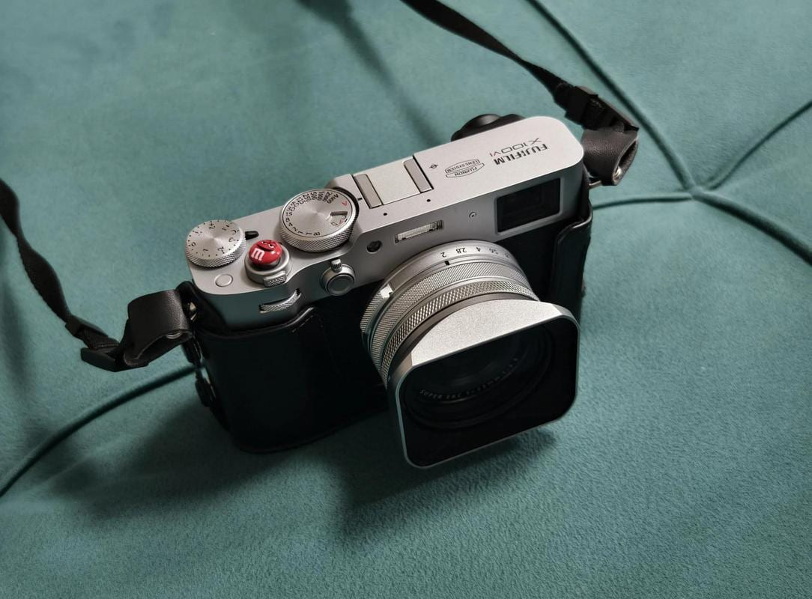

富士 X100

复古旁轴造型的 APS-C 定焦随身机，混合取景器的开山之作。
客观评测
富士 X100 搭载 1230 万像素 APS-C CMOS 与富士龙 23mm f/2 定焦镜头（等效 35mm），画质细腻，色彩延续富士胶片风格。亮点是混合取景器：可一键切换光学旁轴与电子 EVF，取景信息叠加在光路之上。2.8 英寸 46 万点屏、30-1/4000 秒镜间快门可实现高速闪光同步。初期对比度对焦偏慢、操控逻辑稍显繁复，固件更新后改善明显。含电池约 445 克，携带无负担。
主观点评
X100 让『带相机出门』重新变成一件有格调的事。复古金属机身、机械转盘、混合取景器的切换拨杆，每一次操作都带着胶片机的仪式感。35mm 等效视角进可扫街、退可拍人，f/2 光圈的焦外柔和讨喜，富士的绿色和肤色直出就很好看。当然它也娇气：对焦偶尔犹豫、电量一般，可一旦习惯了它，就很难再回到塑料感的数码机身。它不是参数最强的机器，却是最想让人拍照的一台。
优点与不足
- 复古金属机身与机械转盘，格调与手感俱佳
- 混合取景器兼顾光学清爽与电子所见即所得
- 23mm f/2 直出色彩讨喜，扫街人文一机足矣
- 初期对焦犹豫迟缓，抓拍成功率受影响
- 屏幕固定不可翻折，菜单逻辑略显繁复
参数规格
| 传感器 | APS-C 画幅 CMOS |
|---|---|
| 像素 | 1230 万像素 |
| 镜头 | 富士龙 23mm f/2 定焦（等效 35mm），镜间快门 |
| 对焦 | 对比度检测自动对焦，初期偏慢，固件更新后明显改善 |
| 连拍 | 约 5 张/秒（连拍约 10 张后放缓） |
| 视频 | 720p 24fps 短片拍摄 |
| 取景器 | 混合取景器，光学旁轴与电子 EVF 一键切换 |
| 屏幕 | 2.8 英寸 46 万点固定液晶屏 |
| 防抖 | 无机身防抖 |
| 快门 | 镜间快门 30-1/4000s，可实现高速闪光同步 |
| 重量 | 约 445g（含电池、存储卡） |
| 存储 | SD/SDHC/SDXC 卡 |